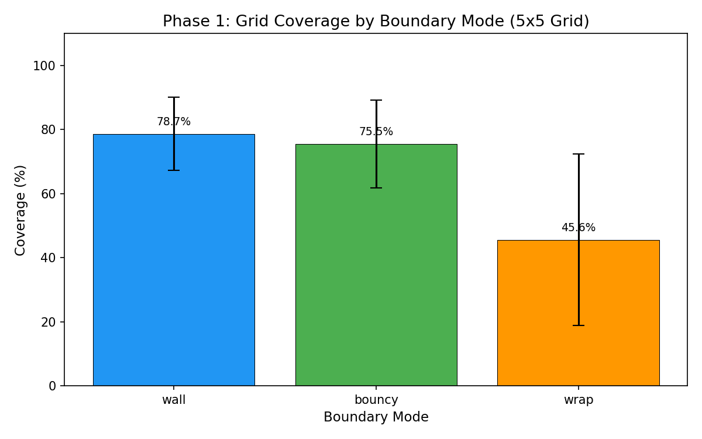
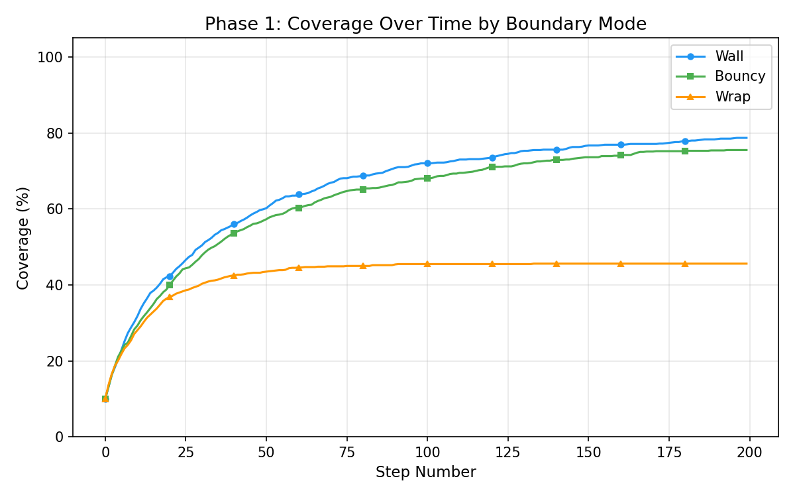
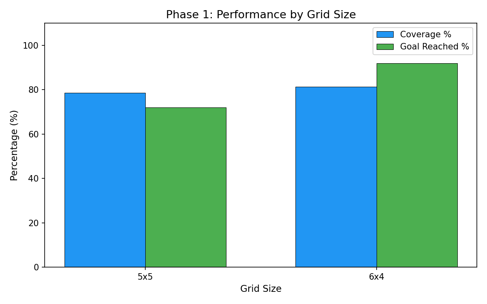
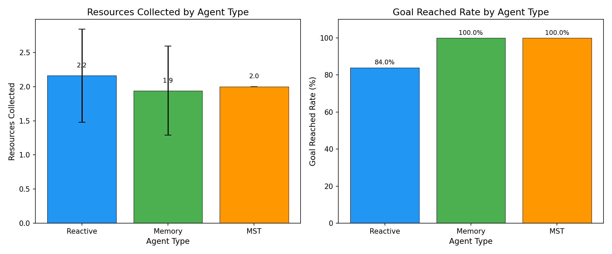
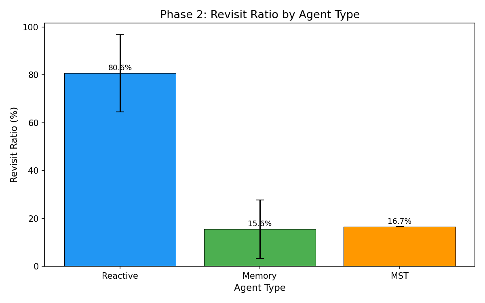
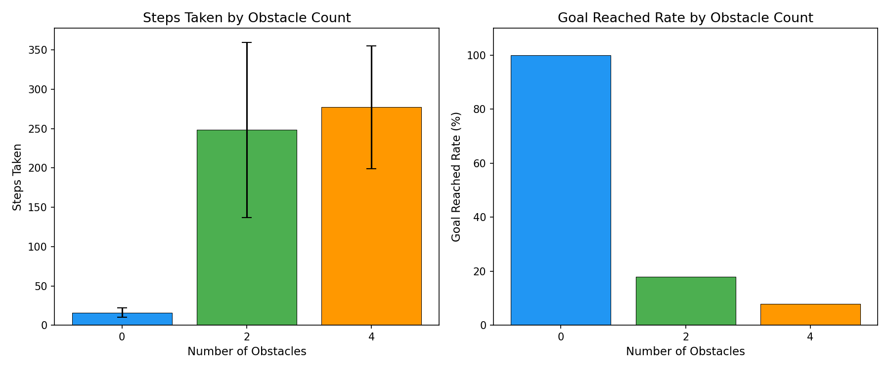
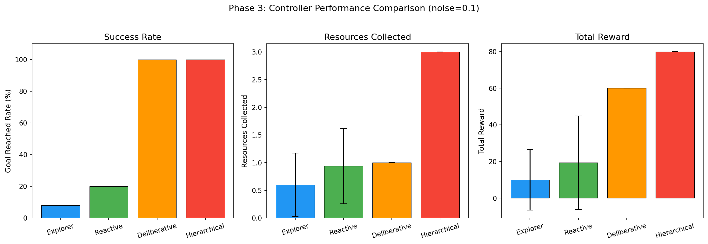
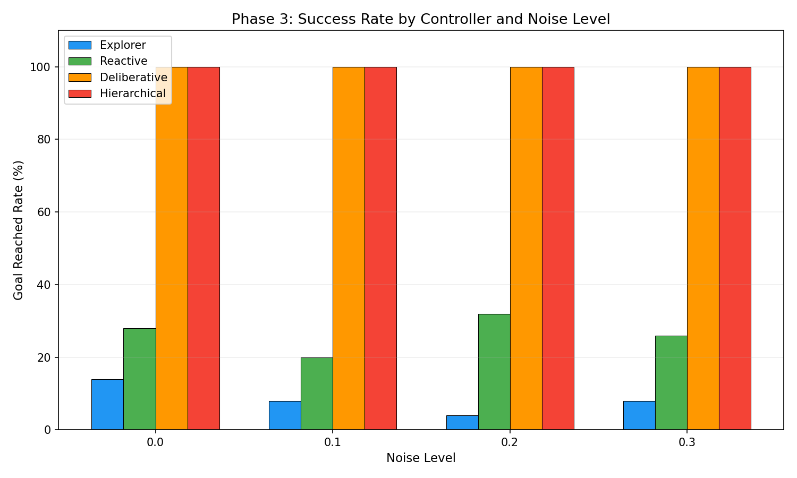
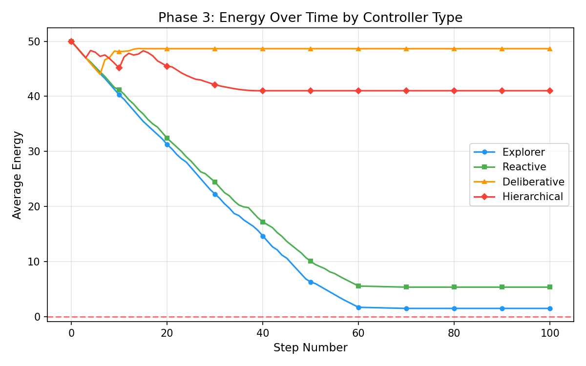
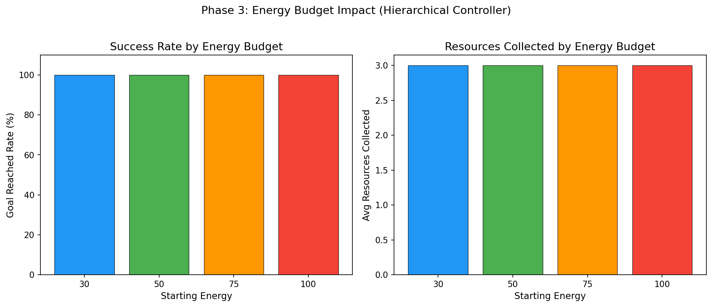

Modelling autonomous decision-making through grid worlds, memory-guided exploration, and hierarchical control under uncertainty.
An autonomous indoor service robot operates in a building represented as a grid-based map. It must navigate rooms and corridors, collect resources, avoid obstacles, reach a designated goal, and manage limited energy.
Grid cells represent rooms and corridors. Walls model physical barriers. Resources stand in for packages, food, or data points. The goal represents a charging station or exit.
The agent must sense its surroundings, avoid or interact with obstacles, make decisions under uncertainty, and optimise objectives such as time, energy, and reward.
Three phases build from reactive movement to memory-guided planning to hierarchical decision-making with stochastic actions and energy constraints.
The system follows a modular, object-oriented design where the environment, agent, and controller are cleanly separated.
Grid, cells, boundaries
Perceive neighbours
Controller logic
Move, collect, push
Energy, memory, stats
Each phase introduces new capabilities, building from simple reflexes to intelligent planning.
Baseline agent navigating with deterministic rules and random movement.
Memory-guided exploration with obstacle pushing and MST-based planning.
Hierarchical controllers with energy management under stochastic uncertainty.
Step-by-step walkthrough of the core algorithms and design decisions.
A 2D grid of CellType enums with configurable dimensions and boundary modes. The environment owns all state: agent position, resource locations, obstacle positions. Three boundary handlers determine what happens when the agent tries to step off the edge.
The simplest agent. Each step it senses adjacent cells, filters for valid (non-wall) directions, and picks one at random. It records visited cells, action counts, and resource pickups for later analysis.
Maintains a visited set and a candidate edges frontier. On each move, it prefers to step into an unvisited neighbour. When all neighbours are visited, it uses BFS to navigate back to the nearest frontier cell, ensuring systematic coverage instead of aimless wandering.
Before moving, computes a Minimum Spanning Tree over all resource positions plus the goal using Prim's algorithm with Manhattan-distance edge weights. A DFS traversal of the MST produces an efficient visitation order. The agent follows this plan using BFS grid pathfinding between nodes.
Controller objects are plugged into the hierarchical agent, cleanly separating strategy from mechanics:
| Controller | Strategy |
|---|---|
| Explorer | Picks from all 4 directions (may hit walls) |
| Reactive | Picks from valid directions only |
| Deliberative | BFS shortest path to goal |
| Hierarchical | Two-level: strategy selector + navigator |
The high level selects a sub-goal based on the agent's state. If energy is low, it switches to survival mode and heads for the goal. If resources are within reach and energy permits, it enters gather mode. Otherwise, it explores unvisited cells. The low level navigates toward the chosen sub-goal using BFS with greedy fallback.
Each action has a configurable probability of deviating to a perpendicular direction, simulating real actuator imprecision. Energy depletes by 1 per step and is partially restored (+10) when collecting a resource. The episode ends if energy reaches zero before the goal is reached.
Seven experiments run 50 episodes each with deterministic seeding. Metrics include coverage, goal rate, revisit ratio, resources collected, energy remaining, and total reward. Ten matplotlib plots are generated automatically in the results/ directory.
Key findings across all three phases, based on 50 episodes per condition.
Each methodology block in README.md (Sections 2.1–2.3) lists matching PNG files and points to results.html, which embeds all ten plots under Phase 1–3 headings plus path traces (ASCII grids and Step N: Move NORTH|SOUTH|EAST|WEST for Reactive and Deliberative examples). Regenerated by python3 main.py via path_traces.py.
| README | What it covers | Plots / page section |
|---|---|---|
| §2.1 Environment | Boundaries, grid sizes | results/p1_*.png · results.html #phase1-plots |
| §2.2 Agents | Reactive, Memory, MST | results/p2_*.png · #phase2-plots; path trace: #path-traces |
| §2.2 Controllers | Explorer – Hierarchical | results/p3_*.png · #phase3-plots; Deliberative trace in #path-traces |
| §2.3 Experiments | E1–E7, 50 episodes | All of the above; captions on this page match README §3 |








| Controller | Noise 0% | Noise 10% | Noise 20% | Noise 30% |
|---|---|---|---|---|
| Explorer | 14% | 8% | 4% | 8% |
| Reactive | 28% | 20% | 32% | 26% |
| Deliberative | 100% | 100% | 100% | 100% |
| Hierarchical | 100% | 100% | 100% | 100% |


| Starting Energy | Goal Rate | Resources | Survived |
|---|---|---|---|
| 30 | 100% | 3.0 | 100% |
| 50 | 100% | 3.0 | 100% |
| 75 | 100% | 3.0 | 100% |
| 100 | 100% | 3.0 | 100% |
Summary of findings linking all three research questions to experimental evidence.
Wall mode yields the highest coverage (79%) for random agents. Wrap-around creates topological shortcuts that guarantee goal attainment at the cost of thorough exploration.
Agent memory reduces the revisit ratio from 81% to 16%, a five-fold improvement. The MST agent guarantees efficient resource collection through global planning.
The hierarchical controller achieves 100% goal rate and maximum reward across all noise levels and energy budgets. Strategy switching between gather, explore, and survive modes is the key differentiator.
Reinforcement learning for adaptive threshold tuning. Multi-agent coordination for collaborative resource gathering. Larger, procedurally generated maps to stress-test scalability. A* heuristic pathfinding for efficiency on bigger grids.